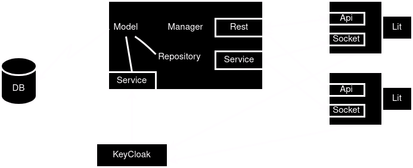
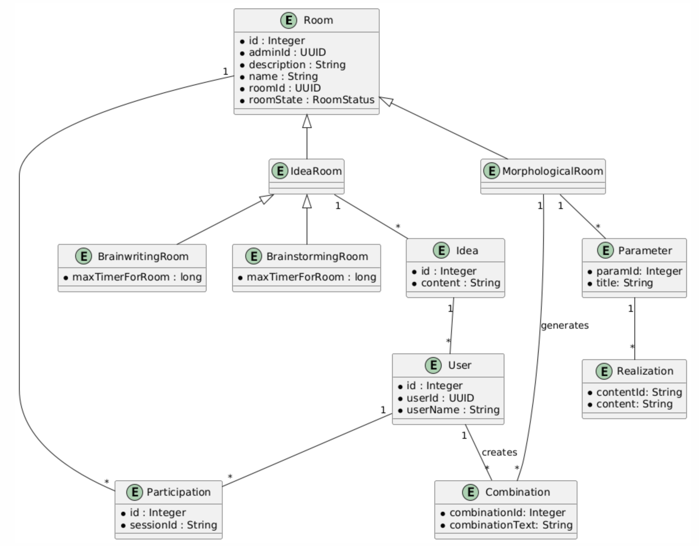

Creative Minds

Projekt der HTL Leonding
Die erste Software Lösung für den Morphologischen Kasten!
Sprint 03 17.10 bis 07.11

Team
Schnalzenberger Isabel
Projekt Leiter & Entwickler
Ursprung Christoph
Frontend Entwickler
Wolfslehner Mattias
Backend Entwickler
Was ist der Morphologischer Kasten?
- Eine Kreativitätsmethode zur Problemlösung
- Ist eine Kreativitätsmethode zur Lösung mehrdimensionaler Probleme
- Mithilfe systematischer Analyse der Parameter wird eine objektive Entscheidungslage geschaffen.
- Wurde von dem Schweizer Franz Zwicky in den 60er Jahren entwickelt
- Anforderung: Zentrale Speicherung der Parameter und Ausprägungen für das Team
- Auch Zwicky-Box genannt
- Grafiken.....
USB
- Hoher Aufwand bei nachträglicher Digitalisierung analoger Projekte
- Erschwerte Zusammenarbeit durch Home-Office und internationale Strukturen
- Gemeinsame Ideenfindung wird durch genannte Faktoren behindert
Ziel
- Unser Projekt will eine digitale Zwichy-Box darstellen
- Grafik....
Architektur

